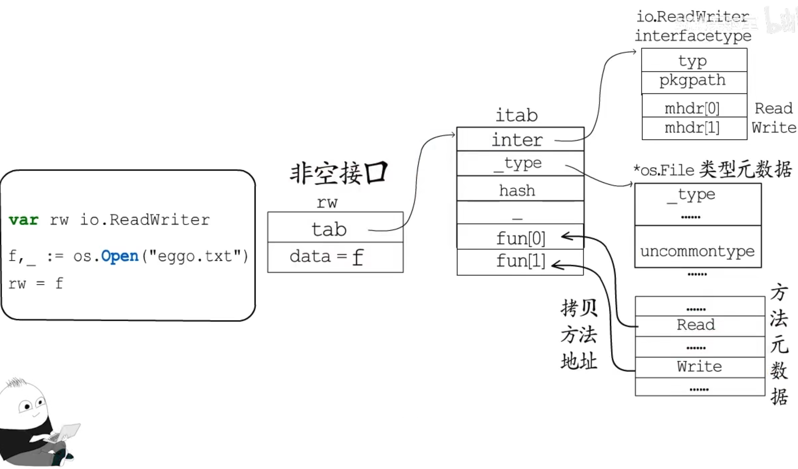
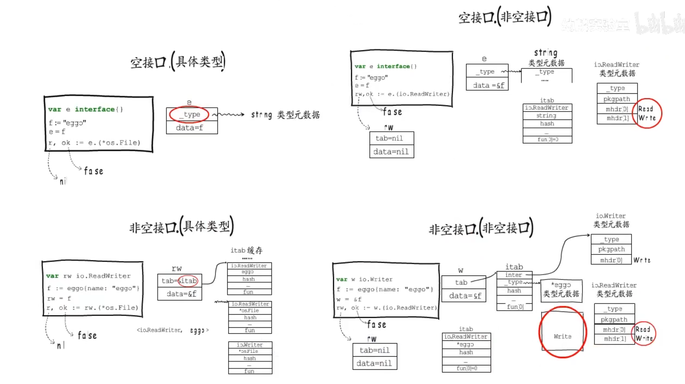

- 内置类型：built-in
- 类型元数据：runtime._type

自定义类型与类型别名

接口
- 空接口interface{}: runtime.eface

- 非空接口: runtime.iface


类型断言
- 空接口判断type
- 非空接口判断_tab

reflect 将类型元数据暴露给用户使用
T和*T的方法集
编译器会为*T生成T的方法的包装方法为了支持接口
*T调用T的方法，是一种语法糖，通过指针解引用
接口不能直接使用接收者为值类型的方法
*T方法包含所有T方法？链接器会把没用的方法裁剪掉 ，不能通过反射去验证，反射也算是用到所有方法，只能通过执行文件分析
泛型与空接口
- 给空接口赋值 值类型会发生装箱造成变量逃逸
- 泛型本质是编译时生成对应的一套代码，会导致可执行代码增多
- 空接口主要用来实现语言的动态特性